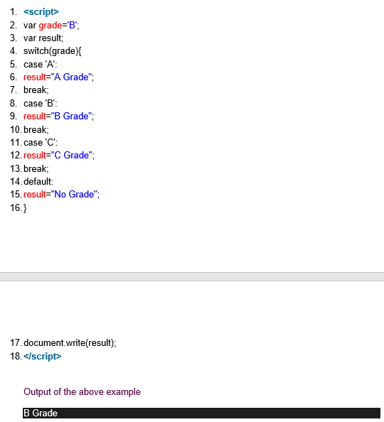
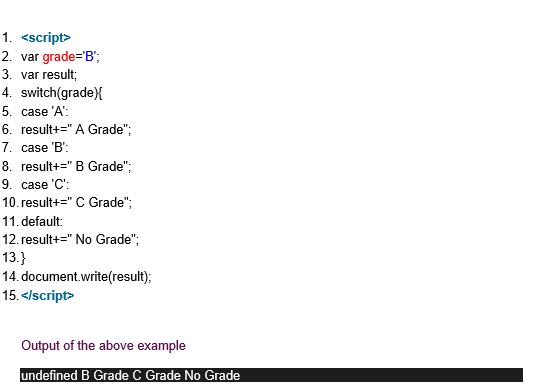

JavaScript Switch
The JavaScript switch statement is used to execute one code from multiple expressions. It is just like else if statement that we have learned in previous page. But it is convenient than if..else..if because it can be used with numbers, characters etc.
The signature of JavaScript switch statement is given below.
1. switch(expression){
2. case value1:
3. code to be executed;
4. break;
5. case value2:
6. code to be executed;
7. break;
8. ......
9.
10. default:
11. code to be executed if above values are not matched;
12. }
Let’s see the simple example of switch statement in javascript.

The switch statement is fall-through i.e. all the cases will be evaluated if you don't use break statement.
Let’s understand the behaviour of switch statement in JavaScript.
